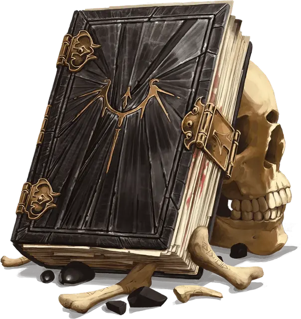

Гримуар дракона
Tome of the Dragon
Чудесный предмет, легендарный

Рекомендованная стоимость 200 000 ЗМ
Этот тяжёлый том переплетён драконьей шкурой и укреплён толстыми полосами холодного железа. Изначальные книги были созданы заклинателями вирмов Культа Дракона и несут на обложке символ этого культа. Гримуар дракона содержит тайный ритуал превращения дракона или тела мёртвого дракона в Драколича.
Чтобы расшифровать и использовать Гримуар дракона, вы должны быть Драконом или заклинателем с по меньшей мере двумя ячейками заклинаний 5-го уровня. Один помощник (Мастер может разрешить больше) может помогать вам проводить ритуал, при условии что этот помощник также отвечает требованиям к использованию гримуара.
Чтобы создать Драколича с помощью Гримуара дракона, вы должны иметь постоянный доступ к телу взрослого или древнего дракона (живого или мёртвого), а также к материалам на сумму 80 000 ЗМ (включая драгоценный камень, который послужит якорем для духа Драколича). Имея необходимые материалы, вы должны проводить ритуал, длящийся 180 дней, поделённых на количество существ, проводящих ритуал. В ходе ритуала вы и все помощники должны работать без перерыва, отдыхая не более 8 часов в день. Если вы — Дракон, стоимость материалов и длительность ритуала уменьшаются вдвое.
Когда ритуал завершён, Гримуар взрывается фиолетовым светом, нанося вам и каждому помощнику 12к6 Некротического урона. Если этот урон снижает Хиты существа до 0, существо погибает и немедленно восстаёт как Зомби под управлением Мастера.
В конце ритуала цель превращается в Драколича. Если целью ритуала был живой дракон, этот дракон мгновенно умирает, и его дух переносится в драгоценный камень, предоставленный для ритуала. Если целью было тело мёртвого дракона, тело оживает, а в камне поселяется злой дух дракона из Внешних Планов. Драколич не имеет никаких обязательств перед своими создателями и действует согласно своей природе.